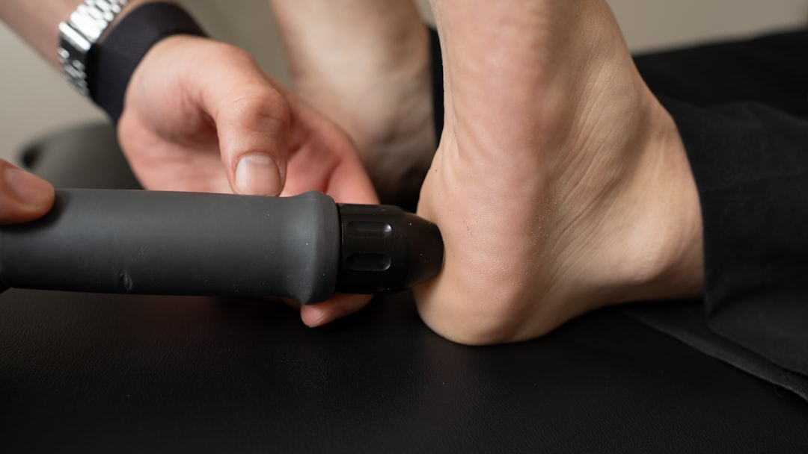
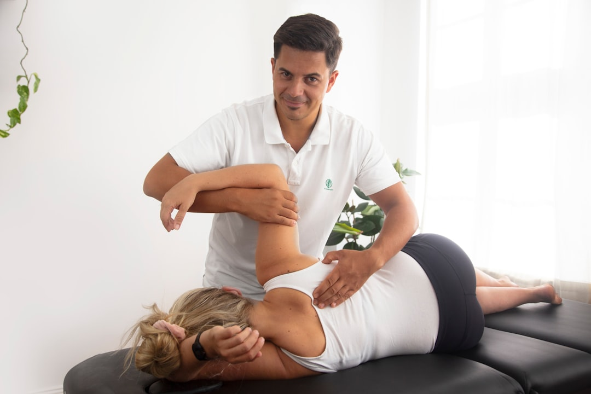

Both shockwave therapy and therapeutic ultrasound are used to treat musculoskeletal conditions. But they deliver energy differently, treat different severity levels, and produce different outcomes. If you've been dealing with plantar fasciitis, tendonitis, or chronic soft tissue pain that won't resolve, understanding the difference helps you choose the right treatment.

Extracorporeal Shock Wave Therapy (ESWT) delivers high-energy acoustic waves into damaged tissue through a handheld applicator. These waves create controlled microtrauma that triggers the body's healing response: increased blood flow, new blood vessel formation, and tissue regeneration.
Shockwave is typically used for conditions that haven't responded to conservative care. It targets deeper tissue and produces a stronger biological response than ultrasound.
Therapeutic ultrasound uses sound waves to generate heat deep in tissue. This increases blood flow, relaxes muscles, and can reduce inflammation. It's gentler than shockwave and has been a standard physical therapy tool for decades.
Ultrasound is often used for acute inflammation, muscle spasms, and mild soft tissue injuries. It's well-tolerated but produces a milder therapeutic effect.

How shockwave therapy and therapeutic ultrasound compare on the factors that matter most.
| Factor | Shockwave Therapy | Therapeutic Ultrasound |
|---|---|---|
| Energy level | High-energy acoustic waves | Low-energy sound waves (heat) |
| Depth of treatment | Deep tissue penetration | Moderate depth |
| Mechanism | Creates microtrauma to trigger healing | Generates heat to increase blood flow |
| Best for | Chronic tendinopathies, calcifications, stubborn injuries | Acute inflammation, muscle spasms, mild injuries |
| Pain during treatment | Some discomfort (brief) | Generally painless |
| Sessions needed | 3-6 sessions, 1 week apart | 6-12+ sessions, often 2-3x/week |
| Clinical evidence for plantar fasciitis | Strong (multiple studies show significant improvement) | Moderate (temporary relief) |
| Tissue regeneration | Yes (stimulates new blood vessel growth) | Minimal |
Shockwave therapy is the better option when conservative treatments have plateaued and you need a stronger healing stimulus.
Therapeutic ultrasound still has its place for milder, acute conditions.
We use the Intelect RPW 2 (Chattanooga Radial Pressure Wave) system for shockwave therapy. This is the same technology used by NFL, MLB, NBA, and Olympic athletic programs. For conditions that have resisted other treatments, shockwave provides a stronger healing stimulus than therapeutic ultrasound alone.
Shockwave is often combined with Class IV laser therapy, chiropractic adjustments, and manual therapy for injuries involving multiple tissue types.
Professional-grade radial pressure wave system used by NFL, MLB, NBA, and Olympic programs.
AI-guided lasers accelerate cellular repair and reduce inflammation at the source.
Hands-on soft tissue work to support healing and improve mobility.
Spinal adjustments to address structural components contributing to pain.
Call (239) 579-4444 or schedule a visit at our Fort Myers or Lehigh Acres clinic.
Same-day appointments at both locations.
Nuestro personal habla inglés y español.
15880 Summerlin Road, Suite 114
Mon, Wed, Fri: 8:00am–12:30pm & 2:00pm–6:00pm
Tue, Thu: By Appointment Only
25 Homestead Road N., Suite 5
Tue–Thu: 8:00am–12:30pm & 2:00pm–6:00pm
Fri: 8:00am–12:30pm
Spinal adjustments, Cox Flexion Distraction, Pro Adjuster SRT.
Non-surgical disc treatment using the DRX9000. MRI required.
Auto accident, workplace, and sports injury treatment.
AI-guided Class IV lasers for tissue repair.
Digital x-rays with MRI coordination.
Myofascial release, joint mobilization.